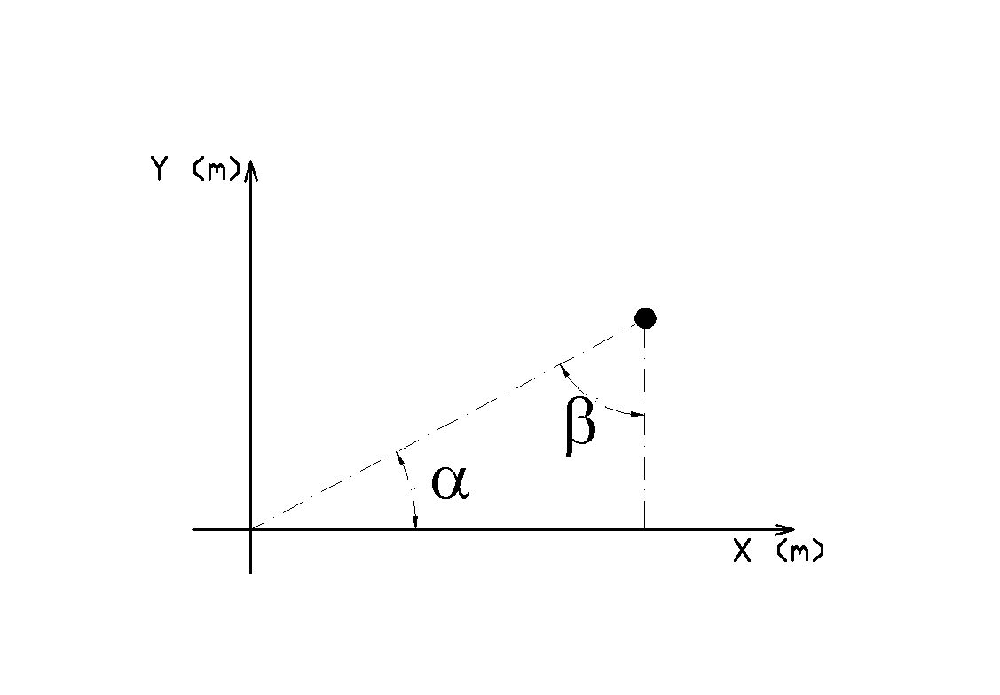

Capitulo 1
Matemática fundamental
Na maioria dos problemas que serão vistos ao longo dos próximos capítulos haverá a necessidade de aplicação de cálculos simples. Por exemplo, em levantamentos topográficos convencionais são medidos em campo, entre os pontos de interesse, ângulos e distâncias, que posteriormente serão utilizadas para cálculo das suas coordenadas , tendo como base um plano topográfico local. Para estes cálculos são empregadas funções trigonométricas e conhecimentos básicos de geometria analítica. Neste capítulo será realizada uma breve revisão de trigonometria e de geometria analítica.
Noções básicas de trigonometria
Trigonometria é a área da matemática que estuda relações entre lados e ângulos de um triângulo. Neste estudo utiliza-se ângulos, em diferentes unidades, e funções trigonométricas, sendo que ao longo desta seção estes pontos serão relembrados.
{kind=link}
This is the caption of the figure (a simple paragraph).
alexandre cancel If equals  é etc, etc.
é etc, etc.